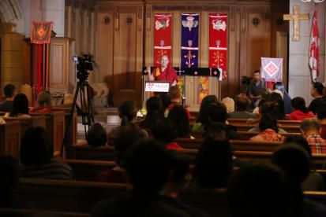

当代藏传佛教女性——加拿大麦吉尔大学演讲
『2014年11月05日』
主持人：
扎西德勒，欢迎大家来到麦吉尔大学宗教研究系。今天的活动十分特别，最主要的原因是，我们非常荣幸地邀请到了索达吉堪布；另一个原因是，此次活动是佛教界与学术界的一次对话。
索达吉堪布是一位非常著名的藏传佛教上师，1985年舍俗出家依止法王晋美彭措为根本上师。堪布所在的佛学院——喇荣五明佛学院，是世界上最大的佛学院，由法王晋美彭措创建，坐落在甘孜藏族自治州色达县，现有人数约一万，主要是出家僧众。
堪布日理万机，平时教学、翻译从不间断，并积极投身于各种慈善活动，而且在全世界广弘正法，目前已在世界上几十所大学做过演讲，比如哈佛大学、哥伦比亚大学、北京师范大学等。今天堪布来到我们麦吉尔大学，这是让人非常高兴的一件事，本次活动也得到了麦吉尔大学宗教研究系的大力支持。
下面让我们以热烈的掌声有请堪布——
今天有机会跟大家交流，我发自内心地欢喜。非常感谢麦吉尔大学宗教研究系，感谢劳拉教授及其他师生为我们提供这样的平台。
这是我第二次来加拿大。早在二十年前，我曾跟随法王来过加拿大，当时去了东部的哈利法克斯，之后的二十年中，都没有再走进这片国土。今天在这里又一次相聚，而且能跟大家交流佛学，我非常高兴。
麦吉尔大学声名远扬，有“北方哈佛”的美称。不过早在三十多年前，我就对这所大学的名字有所耳闻。那是读小学时，课本里有一篇文章——《纪念白求恩》，在七八十年代的中国，这是每个小学生都必须背诵的一课。这篇文章中，有句话说“毫不利己，专门利人”，我至今记忆犹新，而且文章的脚注说“白求恩曾就读于多伦多大学，后来在麦吉尔大学度过他的医学生涯”，由此让我对麦吉尔大学的名字有了印象。
前段时间我收到邀请函时，感觉这所学校的名字非常熟悉，怀疑是不是我前世在这里待过，但好像不是，而是儿时的记忆。
在开始今天的演讲之前，校方让我简单介绍一下喇荣五明佛学院。
一、尘世净土——喇荣五明佛学院
喇荣五明佛学院是我所在的佛学院，我已经在那里待了三十年。从1990年开始，我一直担任佛学院的一名管理人员，去年刚刚卸任，现在以顾问的身份参与管理，对于佛学院的各方面我都比较关心。
关于喇荣五明佛学院，如今不论在美国还是中国，都被很多媒体说成是世界上最大的佛学院。是否真的如此，我也不很清楚，不过确实像刚才主持人所说，这所佛学院如今有约一万人，而且以藏族僧众为主，当然也有一些在家人，以及其他民族的少数出家人。佛学院的现任院长是一位女性——门措空行母，她是第二任院长，至今已在任十一年，第一任院长是法王晋美彭措。
喇荣五明佛学院创立至今三十多年，在那里学习的人，就年龄而言，以年轻人为主；就性别而言，以女众居多，大约占60%多，她们的学习内容和管理方式跟男众没什么差别。在佛学院，大家主要研究佛学，同时也学习世间各种学问，诸如医学、工巧学等等，总之是以比较开放、包容的心态来接受与传播所有对人类有益的知识。
我在喇荣五明佛学院主要负责汉族男女众的教务，已经二十多年了，现在依然在任。所以在女众的教学与管理方面，我应该有一些经验。
今天跟大家探讨的主题是“当代藏传佛教女性”，主要是有关藏地女修行人的。我会结合自己的见解，跟大家做一些介绍。
二、佛教对女性的尊重
在座的都知道，全世界七十多亿人中，大概一半是男性、一半是女性——这个世界是男与女，或者说阴与阳，组合而成。那么对于撑起半边天的女性，佛教如何看待呢？
佛教有三支体系——南传佛教、汉传佛教和藏传佛教。作为藏传佛教，对于女性是非常尊重的，这一点翻开其历史就一目了然。
在藏地，8世纪时出现预试七人——由七名出家男众组成的最初僧团，之后在藏王赤松德赞的王室里有一些女性出家，当时的藏地人对这些出家女众非常恭敬，称呼她们“觉姆”，这是对国王的母亲或姐妹的一种尊称。这种称呼一直沿用至今，目前在藏地，人们对所有女性出家人都是这样称呼。
不仅是藏传佛教，整个佛教对待女性都很尊重，或者说跟对待男性是一样的。
总体而言，佛教中有关男女平等的教义，可以分三个层次——佛陀最初的教言、中期的教言、后期的教言，它们分别归属于早期佛教、中期佛教和后期佛教。尤其在中后期佛教中，男女平等的理念非常明显。
这三期佛教，也可以对应佛教的三乘——声闻乘、菩萨乘、密乘，而三乘涵盖了佛教的全部。
下面我们具体了解一下。
（一）早期佛教
早期佛教主要宣说了声闻乘法，其戒律中规定：出家众有男众和女众，在家众有男居士和女居士，佛陀的眷属为四众眷属。由此可知，不论是选择出家修行还是在家学佛，男众和女众都有平等的机会。
不过，有些人说：佛教对待男女并不平等，因为比丘戒有两百五十条，而比丘尼戒有三百四十八条。
这种说法并不合理。为什么呢？虽然针对比丘尼的戒条多一些，但并不代表是一种侮辱或轻视。就如同国家的法律，一个国家的法律条款繁多，反而是国家健全的标志，因为以此可以保证整个国家顺畅、稳定地运转；同样的，比丘尼的很多戒条其实是对她们的护持，比如没有同伴时不能独行、在某些场合不能打扮，这是针对女性特殊身份而做的一种保护——独行难以保障人身安全、过分打扮容易引发他人的贪爱。
很多人可能没有学过戒律，所以不很了解。其实真正观察就会发现，比丘尼的戒条没有丝毫对女众的轻蔑之意。
另外，不少人觉得小乘佛教里的“八敬法”是男女不平等的集中体现。这也有必要澄清一下。
“八敬法”是八条规范，要求出家女众尊重出家男众，比如比丘尼即使出家时间再长，也要对新出家比丘毕恭毕敬。为什么会有这种规定呢？在公元前500年左右的古印度，整个社会不太有男女平等的观念，那时佛陀如果直接以男女平等的方式管理僧团、制定戒律，就会有悖于整个社会习惯。所以，为了随顺当时的社会状况，同时也是对个别女众的轻慢烦恼予以遮止等等，在有一定密意的情况下，才制定了“八敬法”。
佛教中还有一些教义也是这种情形——为随顺众生而施设，比如“我”本不存在，但是在个别场合，佛陀会说“我”存在；再比如恒常之法本来没有，但是在有的场合，佛陀也会说常法存在。
现在有些人习惯于用部分的观点或现象概括整个佛教，这其实不合理——在说明整体时，应当使用能代表整体的法，而不能以个别或部分的法以偏概全。这一道理，不仅适用于描述佛教，对其他宗教或世间学说，也同样适用。
另外，声闻乘的戒律，只是针对极少数出家人的，大多数人不用受持。
（二）中期佛教
佛教进入中期，被称为菩萨乘，其观点是：作为大乘菩萨，对待所有众生——男性和女性，乃至所有动物，都要一视同仁、慈悲救度。这种平等观中，没有对男性或女性哪一者看得更轻或更重的倾向。
菩萨乘的戒律弘扬到人间时，分化为两大派系——龙猛菩萨的甚深见派与无著菩萨的广大行派。不论二者中的哪一派，都要求最初发菩提心、中间受持戒律，这对于男女修行人没有任何差别。而且菩萨戒的核心是利益众生，这方面男女修行人也要同等发挥作用。
在座的可能读过《华严经》，其中讲到善财童子参访五十三位善知识的故事，这些善知识中，有很多是以女性的身份弘扬佛法、广利有情的。
（三）后期佛教
佛教进入后期，主要摄集了佛陀晚年的教言，包括一些密乘续典，比如《时轮金刚》，这个续部不仅秉持男女平等的观点，而且着重讲述了如何发挥女性特有的智慧、悲心等方面的道理。
密乘最为主要的戒律是十四根本戒，十四根本戒中很重要的一条是“凡进入密乘者，不能诋毁女性”。由此可见对女性的特殊尊重，因为并没有说“不能诋毁男性”，很多男众可能会觉得有点不公平。
早期佛教里虽然宣说了女身不净等内容，但同时也说男人的身体也不例外。而后期佛教中，尤其赞叹了女性的一些特殊功德，这些则是男性不一定具备的。

三、藏密中的女性成就者
在藏传佛教中，修行密法而成就的女性不胜枚举。
比如11世纪时，有一位叫玛吉拉准的女子。我曾看过她的传记，她从十几岁到九十八岁的人生，令人惊叹而感动。她的常随弟子有五千人，其中的十六位胜士以及一千两百六十三人获得了开悟。当时的藏地人口不是很多，她能摄受那么多人，而且让其中很多人取得出世间的证悟，确实非常了不起。
玛吉拉准创立了断法，这一教派一直延续至今。目前在藏地为主的很多地方，仍有许多人修持这个法门，修行的效果也非常好。
类似这样的女性成就者，在藏地还有很多。
去年我去哈佛大学做讲座，曾在间歇时去听一位女教授的课。她刚好在讲述8世纪中期藏地女性大修行人益西措嘉的传记，益西措嘉曾有过被人强暴的经历，但是这并没有让她失去生活的信心，依靠修行的力量，这次遭遇反而成为她新生活的开端，并且她对施害者生起悲悯，而并非心怀嗔恨——这一点，恐怕一般人难以做到。
当时在场的哈佛大学师生分析了她的心态，探讨了修行带来的利益，同时他们也举出美国西雅图以及尼泊尔发生的类似事件，而事件中的受害女士都无法承受这种灾难，内心非常痛苦，甚至陷入绝望。
益西措嘉不仅自己拥有很高的修证，更重要的，她把莲花生大士的教言立成文字、编写目录，并且运用伏藏——一种出世间的超越方式——隐藏起来。由此使得大量密法精要得以保存，在后来的时代中利益众生。
今天东西方的学者和宗教人士，能够学到莲花生大士的经教，跟益西措嘉当年的努力密不可分，应当对她怀有深深的感恩。
另外，在佛教中，女性对成办超越的解脱也有巨大作用。从历史上看，像贝玛桑巴瓦，还有印度八十四位大成就者中的很多人，都是借助女性的殊胜智慧和方便而获得成就的。
我听说你们学校有教授在研究萨绕哈尊者（印度八十四大成就者之一）的道歌，这非常有意义。从历史资料看，萨绕哈尊者的卓越成就，跟某些特殊修法有不可分割的关系。
四、世间中的成功女性
太阳的暖热，月亮的清凉
站在世间角度看，男性与女性各有特点。民间有句话也说“男人如山，女人如水”，也就是说，男性一般比较刚强，有承担责任的力量；女性则比较温柔，给人带来关爱与温暖。所以，男性与女性可以互为补充。
有些女权主义者认为：“男人能做的事，女人也能做，所以在权力与地位上，女人要争取与男人平等。”我觉得，如果这种语言能够激发女性的能量，也是可以的，但是世人常说“女人以家为天下，男人以天下为家”——女性大多是网状思维模式，更加关注身边的生活；而男性在宏观方面更有谋划，担当领导或者起独特的作用，比较合适。
因此，男性与女性各有所长，应当在各自的位置上发挥独特的力量，如同太阳有太阳的光芒，给万物带来暖热和能量；而月亮有月亮的光亮，给世界带来清凉和宁静。总之，世上的每个人，所做的事情、所起的作用，不一定完全相同。
慈爱的秉性
在一些大型会议，诸如国家元首聚会上，参会者往往大多是男性，这总是让我不禁想起“一个成功男人的背后，必定有一个伟大的女人”这句话。确实是这样的，这些成功的男性之所以有今天的地位与荣耀，背后都有不同的女人在默默支持着。
实际上，女性在付出慈爱方面有种与生俱来的秉性，比如大家一起吃饭，女性一般会很敏感地关照周围人，细心照顾他们。而且世上的大多数人，从小感受最多的就是母亲的爱。
这次我乘飞机从澳洲到美国，又到加拿大，这期间有十几个小时的夜间飞行。当时我看到一对非洲夫妇抱着一个孩子，那个孩子不是很乖，只要抱着的人坐下来，他就开始哭闹。刚开始那个父亲也帮忙抱孩子，但是到了后半夜他睡着了，母亲就一直抱着，站了一夜。
接近到美国时，我跟身边人说：“其实这个母亲很可怜的，为了孩子，她一夜没睡，而且一直站着。”
不仅是这位母亲，其他很多家庭中的母亲，可能都是对孩子付出最多的人——为了孩子，母亲愿意挨饿，愿意受累，只要孩子健康、快乐。
以我为例，小时的经济条件不是很好，很少有好的食物，而一旦有些好吃的，我的母亲都会分给孩子们，分给家人，而她自己常常忍受饥饿。有时家里来了客人，她也愿意把食物拿给他们享用，而她自己或者空着肚子，或者随便应付。
现在很多人的生活不一定那么贫乏，但是一家之中，母亲对孩子的慈爱永远不会改变。因此每一个得受过母爱的人，都要深深感念这份慈恩。
佛经中也特别赞叹母爱，比如讲到菩萨应度化众生时，会说“度化老母有情”，并没有说“度化老父有情”，这个不知道你们能接受吗？
令世人钦佩的女性
女性中也有很多人，做出了令世人瞩目的大事。
以政界而言，像维多利亚女王，一方面对家人非常包容和关爱，另一方面统治英国长达六十四年，成为当时英国的象征。
在科学领域，比如居里夫人，曾两度荣获诺贝尔奖。在第一次获得诺贝尔物理学奖后，居里夫人遭遇了一些不幸，但她并没有因此消沉，而是坚强地站起来，继续为科学做出奉献，这非常难得。
在慈善方面，特蕾莎修女对苦难者平等付出爱，这种大爱令世界折服，她也因此获得诺贝尔和平奖。
不仅很多世间女性的成就令人钦佩，在出世间，女性也越来越发挥杰出的作用，比如佛教团体中，弘扬佛法的女性越来越多，而且越来越具有智慧和慈悲。
这种现象在佛经中曾有授记。佛陀涅槃前宣说了一部《法灭尽经》，其中讲：正法将灭之时，女人非常精进，常常修持功德；而男子懈怠傲慢，不肯遵循法语，眼视出家僧人，如同见到粪土一般，不起丝毫信心。
根据这个授记，在末法时代，女性在修行佛法方面也会表现出特殊的力量。
五、内在美，更值得追求
每个人都追求美好，女性也不例外，而且很多女性钟情于外在美，这当然无可厚非。不过，外在美只是眼识所见的外相，不能算作真正的美。真正的美是什么呢？应该是内在的美，诸如善良的心地、包容的品格。
因此，很多女性如果能更加注重内在美，那么不仅自己会越来越快乐，也可以使得自己的家庭更加温暖、幸福，乃至对整个世界的和谐，都会带来微妙的影响。如此一来，女性的美就不仅局限在个人的外相上，而是渗透到家庭、社会，乃至世界的祥和中。
从另一个角度看，生活并非平面，而是立体的，需要很多面的美来装点，因此，追求内在美，对于包括女性在内的所有人，都很有必要。